Práctica 1.1 - Instalación y configuración de nuestra máquina virtual¶
Objetivos
Al terminar esta práctica deberás ser capaz de:
- Instalar un sistema operativo servidor (Debian) en una máquina virtual, sin entorno gráfico.
- Configurar su red para que sea accesible desde tu equipo.
- Administrar el sistema con
sudodesde un usuario normal, sin trabajar como root. - Conectarte al servidor por SSH, primero con contraseña y después con un par de claves.
- Endurecer la configuración del servidor SSH para que solo se pueda acceder con clave.
Material necesario
- Un ordenador con al menos 8 GB de RAM y 30 GB de disco libres.
- VirtualBox (versión 7.2 o superior). También sirve VMware Workstation, UTM o KVM: los pasos son equivalentes.
- La imagen netinst de Debian (paso 1).
1. Descargar Debian¶
Como servidor utilizaremos la distribución Debian. Descargaremos la imagen netinst, que la propia página de Debian describe así:
Quote
Un CD de "instalación por red" o "netinst" es un único CD que posibilita que instale el sistema completo. Este único CD contiene sólo la mínima cantidad de software para instalar el sistema base y obtener el resto de paquetes a través de Internet.
Es decir: una imagen pequeña (unos 700 MB) que descarga lo demás durante la instalación. Perfecta para un servidor, donde queremos instalar lo mínimo imprescindible.
Descárgala desde aquí, eligiendo el archivo debian-XX.X.X-amd64-netinst.iso:
https://cdimage.debian.org/debian-cd/current/amd64/iso-cd/
Info
Trabajaremos con Debian 13 (Trixie), la versión estable actual. Desde Debian 12 las imágenes oficiales ya incluyen el firmware no libre, así que no necesitas buscar ninguna imagen especial para que funcione el hardware.
Instalar máquinas virtuales es algo que se supone aprendido de cursos anteriores, así que aquí se dan las pautas generales y se hace hincapié solo en lo que importa para este módulo.
2. Crear la máquina virtual¶
En VirtualBox pulsa New. Desde la versión 7.2 todo se configura en una sola ventana con cuatro secciones desplegables.
Virtual machine name and operating system. Ponle un nombre identificable y selecciona como ISO Image el fichero netinst que acabas de descargar. Así queda montado como unidad de CD de la máquina, y VirtualBox detecta solo el tipo de sistema (Linux / Debian / Debian 13 Trixie (64-bit)):
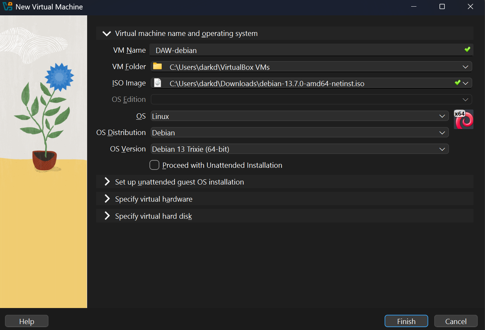
Desactiva la instalación desatendida
Con la ISO ya seleccionada, VirtualBox te ofrece la casilla Proceed with Unattended Installation. Déjala desmarcada: si la marcas, VirtualBox instala Debian por su cuenta y no verás el instalador. Queremos instalar a mano para ver y entender cada decisión. La sección Set up unattended guest OS installation no se toca.
Specify virtual hardware y Specify virtual hard disk:
| Recurso | Mínimo | Recomendado |
|---|---|---|
| RAM (Base Memory) | 1 GB | 2048 MB |
| Procesadores (Number of CPUs) | 1 | 2 |
| Disco (Create a New Virtual Hard Disk) | 10 GB | 20 GB |
- Use EFI: desmarcado.
- Disco de tipo VDI, sin marcar Pre-allocate Full Size: así el fichero crece según se usa y no ocupa los 20 GB de golpe.
Sin entorno gráfico la máquina funciona perfectamente con poco, pero a lo largo del módulo instalarás servidores web, Docker y bases de datos: no te quedes corto.
Pulsa Finish, pero no arranques todavía la máquina.
Configuración de red: NAT + Host-only¶
Este paso es el más importante de toda la práctica. Selecciona la máquina, entra en Settings → Network y configura dos adaptadores:
Adapter 1 → NAT. Es el que viene por defecto; déjalo así. Le da a la máquina salida a Internet, que el instalador netinst necesita para descargar los paquetes.
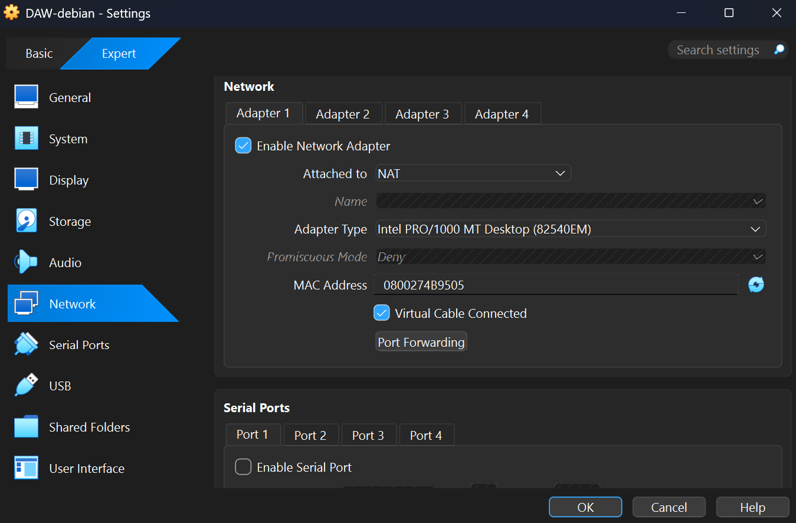
Adapter 2 → Host-only Adapter. Marca Enable Network Adapter, en Attached to elige Host-only Adapter y en Name VirtualBox Host-Only Ethernet Adapter. Crea una red privada entre tu ordenador y la máquina virtual, y es por donde entrarás al servidor (SSH, web…).
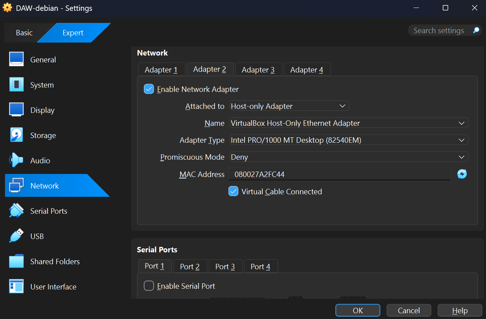
Si en Name no aparece ninguna red, créala antes en la ventana principal de VirtualBox: File → Tools → Network Manager → Host-only Networks → Create.
Por qué no basta con NAT
El modo NAT mete la máquina en una red privada propia. Desde ella podrás salir a Internet, pero tú no podrás entrar, que es exactamente lo contrario de lo que necesita un servidor. Por eso añadimos el adaptador Host-only. Si más adelante no puedes conectarte por SSH, lo primero que debes comprobar es esto.
¿Y el adaptador puente?
El adaptador puente (bridged) mete la máquina directamente en la red del aula o de tu casa, como un ordenador más. Funciona con un solo adaptador, pero depende de la red física: suele fallar con wifi o con redes que filtran equipos, la IP cambia cada vez que cambias de red y deja tu servidor a medio configurar expuesto a toda la red del centro. Con NAT + Host-only la máquina funciona igual en cualquier sitio y tiene siempre la misma IP.
Comprueba la red Host-only de tu ordenador. En Windows, abre PowerShell y ejecuta ipconfig. Busca el adaptador VirtualBox Host-Only Network (a veces aparece como Ethernet 2 o similar): su IP debe ser 192.168.56.1. Es lo normal. Si fuera otra (por ejemplo 192.168.57.1), en el paso 4 tendrás que usar la IP terminada en .10 de tu red (192.168.57.10).
3. Instalar Debian¶
Selecciona la máquina y pulsa Start. Arrancará desde la ISO y verás el menú del instalador. Elige Graphical install:
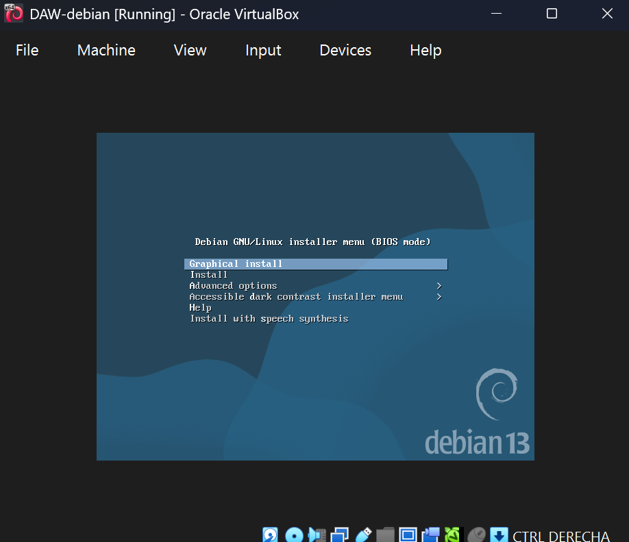
Usa el teclado
Al principio el ratón puede no responder bien dentro de la máquina. En el instalador el teclado es más fiable: flechas para moverte, escribir las primeras letras para saltar en una lista, barra espaciadora para marcar casillas, Tab para cambiar de campo y Enter para continuar.
Si el ratón queda atrapado dentro de la ventana, pulsa Ctrl derecho (la tecla Host de VirtualBox) para liberarlo.
Los pasos que importan:
Idioma, ubicación y teclado. Instalaremos el sistema en inglés: los mensajes de error y los logs saldrán igual que en la documentación y en los foros donde buscarás soluciones.
- Select a language: English.
-
Select your location: España no aparece en la lista corta, porque solo incluye países de habla inglesa. Elige other → Europe → Spain. Así se configura la zona horaria de España.
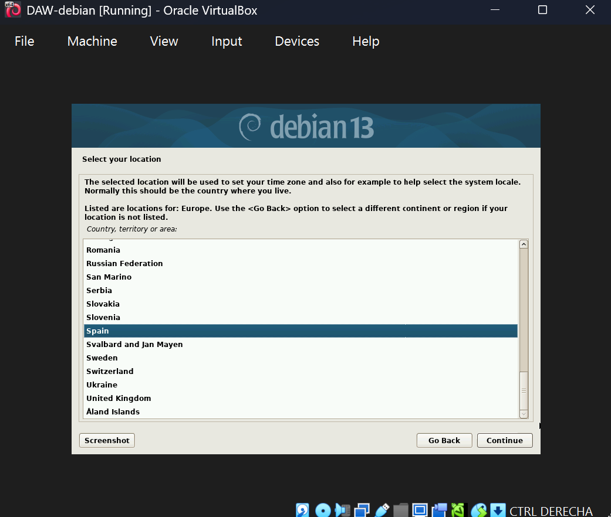
-
Configure locales: United States - en_US.UTF-8.
- Configure the keyboard: Spanish. ⚠️ Si dejas American English, los símbolos (
/,-,|,@…) no estarán donde esperas.
Interfaz de red principal. Como la máquina tiene dos adaptadores, el instalador pregunta cuál usar. Elige enp0s3, que es el Adapter 1 (NAT) y el que tiene Internet. enp0s8 es el Host-only y lo configuraremos después de instalar.
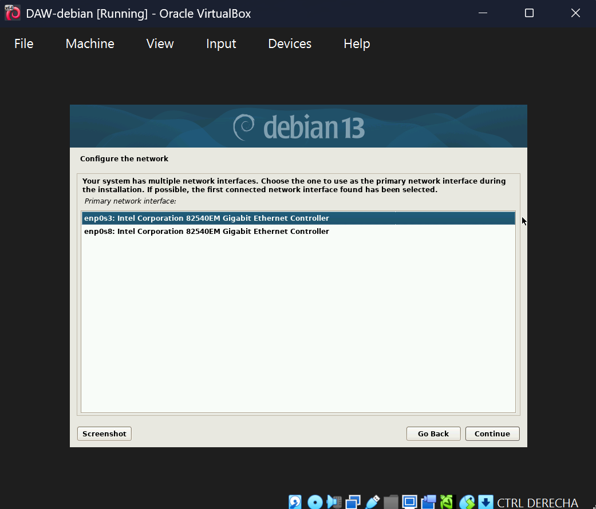
Nombre de la máquina (hostname). Aquí no eliges libremente: el nombre de tu máquina debe ser
en minúsculas, sin acentos, sin espacios y sin la ñ (por ejemplo, debian-garcia). Si tienes dos apellidos, usa solo el primero. En la captura aparece daw-debian: tú escribe el tuyo.
Esto no es un capricho
El hostname aparece en el prompt de cada comando que ejecutes (usuario@debian-tuapellido), así que firma automáticamente toda tu entrega. Una práctica entregada con el nombre de otra persona en el prompt es una práctica copiada, y se corrige sola.
Si te equivocas al instalar, se arregla después con estos dos comandos y reiniciando. El segundo cambia también el nombre en /etc/hosts; si te lo saltas, sudo se quejará en cada uso con unable to resolve host (el propio segundo comando todavía mostrará ese aviso una última vez; es normal):
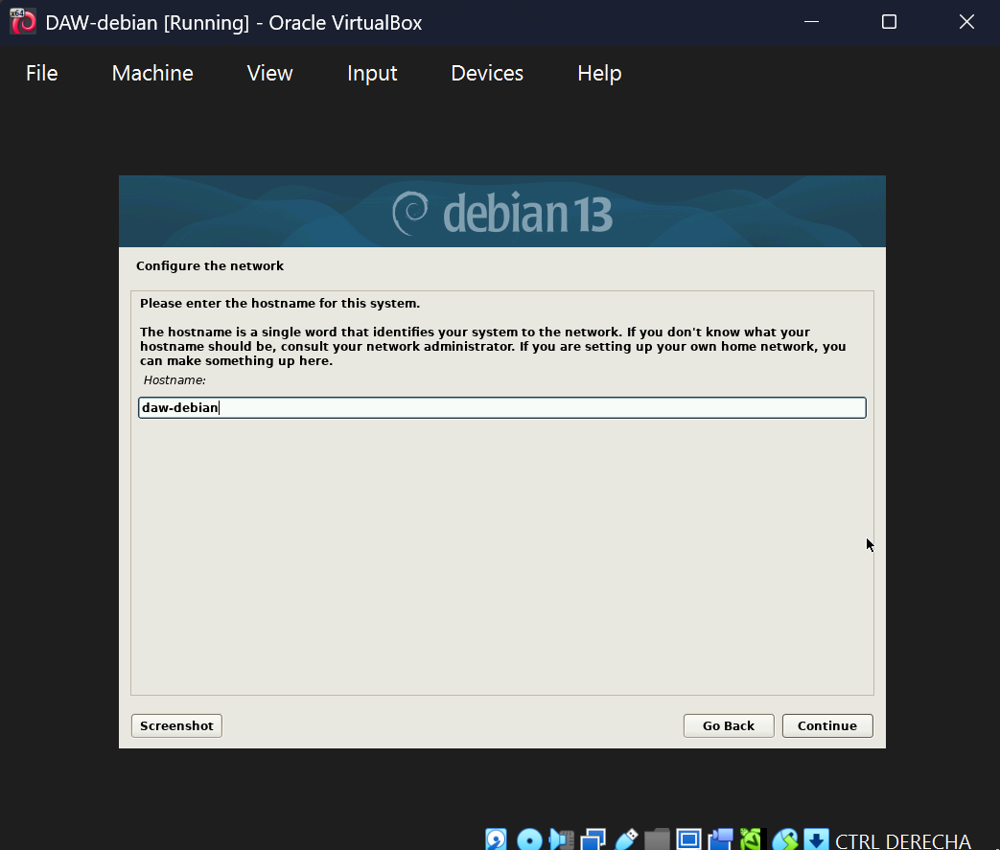
Domain name: déjalo en blanco.
Contraseña de root: déjala vacía (los dos campos).
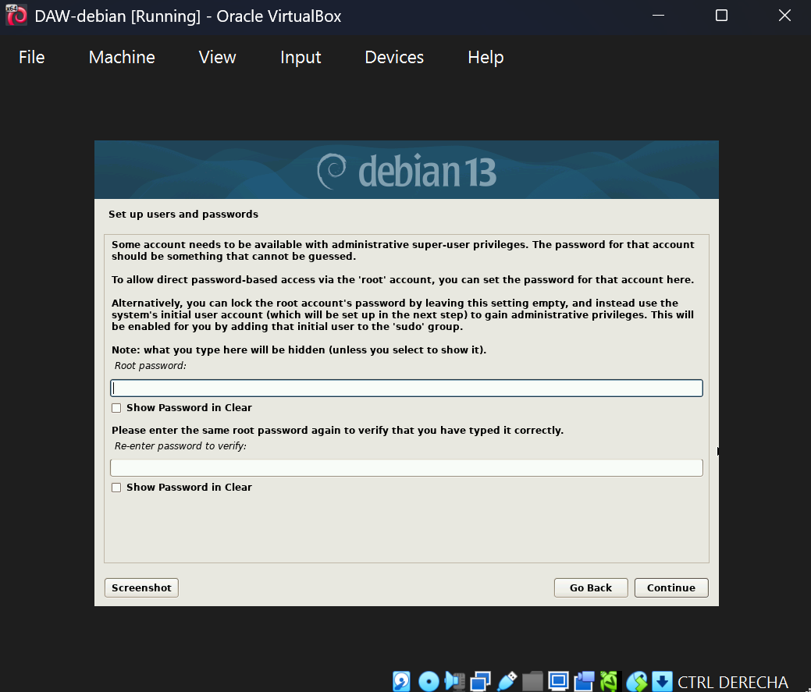
Como indica el propio instalador, si no pones contraseña a root la cuenta queda bloqueada y el usuario que crees a continuación se añade automáticamente al grupo sudo. Es lo que se hace hoy en la mayoría de servidores (Ubuntu Server, las máquinas de AWS o Azure…): se trabaja con un usuario normal y se usa sudo solo para las tareas de administración. Lo verás en el paso 6.
Usuario. Después te pedirá:
- Full name for the new user: tu nombre completo.
- Username for your account: en minúsculas y sin espacios ni tildes (por ejemplo,
ana). - Password: escríbela dos veces y apúntala, porque es la que te pedirá
sudo. Marca Show Password in Clear para comprobar que la escribes bien: es fácil equivocarse con la distribución del teclado.
Reloj. Madrid (o Canary Islands si corresponde).
Particionado. Para simplificar, dile que utilice todo el disco:
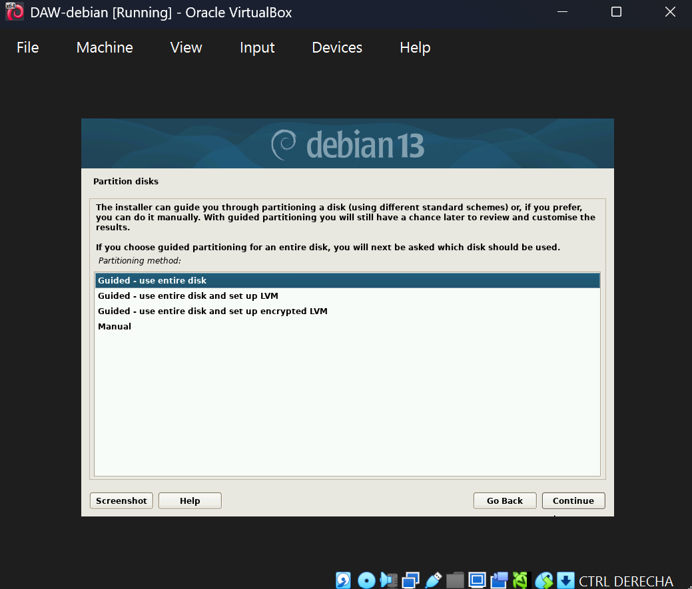
- Partitioning method: Guided - use entire disk.
- Select disk to partition: el único que hay,
sda. Aparece como 21.5 GB y no como 20 GB porque VirtualBox mide en GiB y el instalador en GB. - Partitioning scheme: All files in one partition (recommended for new users).
- En el resumen verás una partición
ext4montada en/y otra deswap. Elige Finish partitioning and write changes to disk. - Write the changes to disks?: marca Yes. ⚠️ Por defecto está en No; si continúas así, vuelve atrás y parece que no avanza.
Solo se borra el disco virtual de la máquina, no el de tu ordenador.
Gestor de paquetes.
- Scan extra installation media?: No.
- Debian archive mirror country: Spain.
- Debian archive mirror: deb.debian.org. Es una red de servidores que te redirige automáticamente al más cercano.
- HTTP proxy information: en blanco.
- Participate in the package usage survey?: No.
Selección de software (tasksel). Aquí está la otra decisión crítica. Deja marcado únicamente:
- SSH server
- standard system utilities
Y desmarca todo lo demás, en especial Debian desktop environment y cualquier escritorio (GNOME, Xfce, LXDE…). Revisa la lista entera: si queda marcado un escritorio concreto, se instala aunque hayas desmarcado Debian desktop environment.
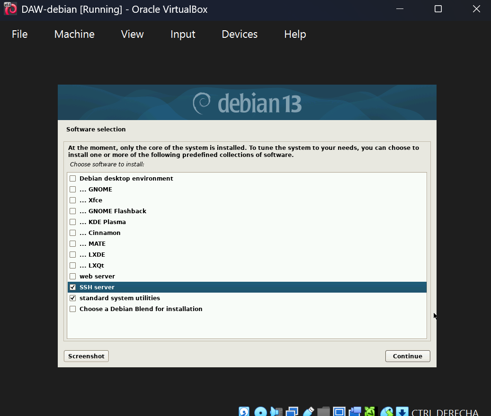
Sin entorno gráfico
Un servidor no lleva escritorio: consume memoria, aumenta la superficie de ataque y no lo va a mirar nadie. Las webs que despliegues las probarás desde el navegador de tu ordenador, gracias al adaptador Host-only.
Tampoco marques web server: instalaremos el servidor web a mano en una práctica posterior.
Gestor de arranque GRUB. Dile que sí lo instale (Yes), y selecciona el único disco que tienes, /dev/sda. Pincha en el nombre del disco, no en Enter device manually, o no se instalará:
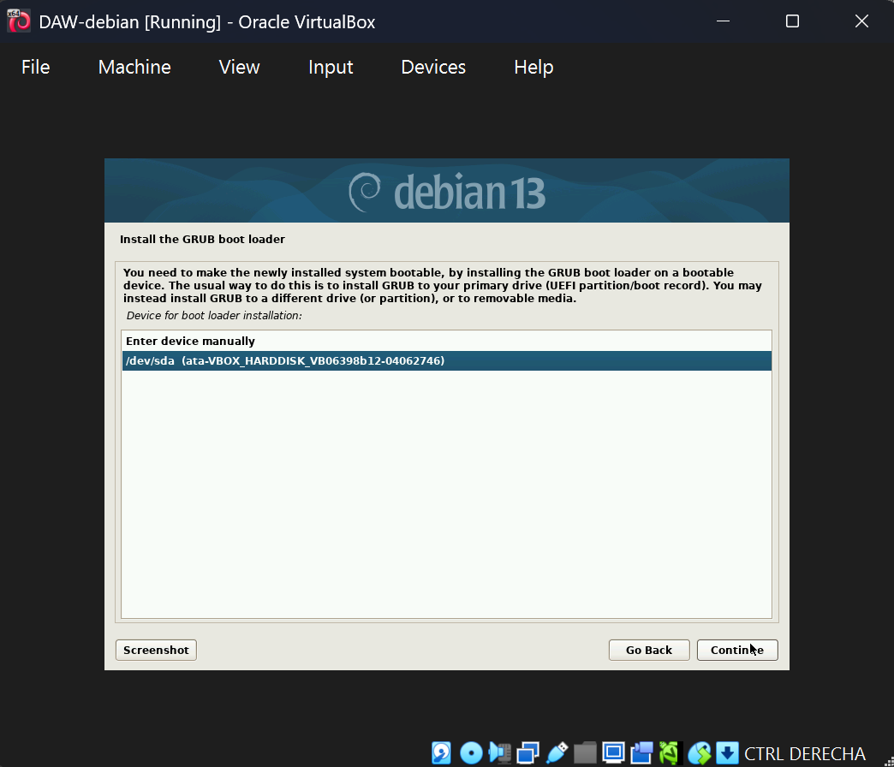
Al terminar aparecerá Installation complete: pulsa Continue y la máquina se reiniciará. Tras el reinicio aparecerá una terminal pidiendo login, y ahí ya puedes entrar con tu usuario y contraseña (al escribir la contraseña no se ve nada; es normal).
Si vuelve a aparecer el instalador
Normalmente el instalador expulsa la ISO al terminar. Si al reiniciar vuelves a ver el menú de instalación, quita la ISO desde Devices → Optical Drives → Remove disk from virtual drive y reinicia.
Máquina de respaldo
Si tu instalación falla y no hay tiempo para repetirla, el profesor te facilitará una máquina ya instalada (DAW-debian.ova). Impórtala con File → Import Appliance y, en MAC Address Policy, elige Generate new MAC addresses for all network adapters.
- Usuario:
alumno· Contraseña:daw1234 - Nada más entrar, cambia la contraseña con
passwdy el hostname con los dos comandos del recuadro "Esto no es un capricho" (el dehostnamectly el de/etc/hosts). -
Regenera las claves del servidor SSH. Todas las copias de la máquina de respaldo tienen las mismas, así que todas tendrían la misma huella (lo entenderás en el paso 5):
-
La red Host-only ya viene configurada: puedes saltarte el paso 4.
4. Configurar la red Host-only¶
Desde la ventana de la máquina virtual, comprueba el estado de las interfaces de red:
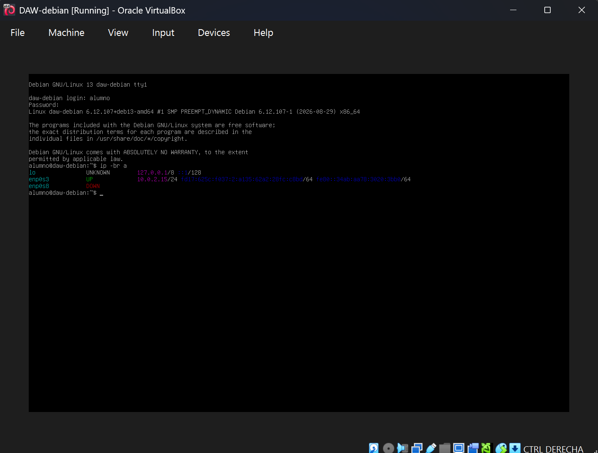
| Interfaz | Qué es | Estado |
|---|---|---|
lo |
Loopback: la máquina hablando consigo misma | 127.0.0.1 |
enp0s3 |
Adapter 1 (NAT): salida a Internet | UP con 10.0.2.15 |
enp0s8 |
Adapter 2 (Host-only): acceso desde tu ordenador | DOWN, sin IP |
El instalador solo configuró la interfaz principal. Vamos a dar a enp0s8 una IP fija: 192.168.56.10.
¿Y si todos usamos la misma IP?
No hay problema. La red Host-only es privada y local a cada ordenador: solo existe entre tu Windows y tus máquinas virtuales, y no sale a la red del aula. Treinta máquinas con 192.168.56.10 en treinta ordenadores distintos no chocan, igual que todos los routers domésticos usan 192.168.1.1.
Si más adelante tienes varias máquinas virtuales en tu ordenador, cada una necesitará una IP distinta dentro de esa red (.10, .11, .12…).
Edita el fichero de configuración de red:
Te pedirá tu contraseña: es la primera vez que usas sudo. Al final del fichero, añade:
# Red Host-only: acceso desde el anfitrión
allow-hotplug enp0s8
iface enp0s8 inet static
address 192.168.56.10/24
No lleva gateway: la salida a Internet ya la da enp0s3 (NAT).
Guarda y sal de nano con Ctrl+O, Enter y Ctrl+X. Después levanta la interfaz y comprueba que tiene su IP:
enp0s8 debe aparecer como UP con 192.168.56.10/24:
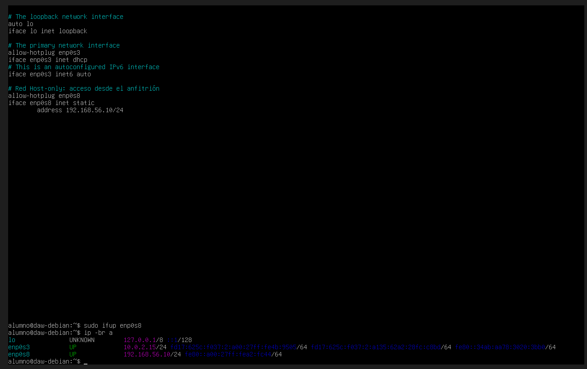
Comprueba antes de seguir
Desde tu ordenador, abre PowerShell y haz ping 192.168.56.10. Si no responde, revisa el Adapter 2 de VirtualBox y el fichero /etc/network/interfaces antes de continuar.
5. Primera conexión por SSH (con contraseña)¶
Con la red configurada ya no necesitas la ventana de VirtualBox: a partir de aquí trabajarás siempre desde tu terminal, igual que con un servidor real, al que nunca tienes delante. Además, en la terminal puedes copiar y pegar comandos, cosa que en la ventana de la máquina virtual no se puede.
Para arrancar la máquina, haz clic derecho sobre ella en VirtualBox y elige una de estas opciones en Start:
| Opción | Qué hace |
|---|---|
| Start with GUI | Arranque normal, con ventana |
| Start without GUI | Sin ventana: la máquina funciona en segundo plano |
| Start with detachable GUI | Con ventana, pero al cerrarla la máquina sigue encendida |
Se recomienda Start with detachable GUI: ves el arranque y el login por si algo falla, y cuando ya te conectes por SSH cierras la ventana (eligiendo Continue running in the background).
Con la máquina encendida, conéctate:
La primera vez te avisará de que no conoce el servidor y te mostrará su huella (fingerprint):
The authenticity of host '192.168.56.10 (192.168.56.10)' can't be established.
ED25519 key fingerprint is SHA256:xxxxxxxxxxxxxxxxxxxxxxxxxxxxxxxxxxxxxxxxxxx.
Are you sure you want to continue connecting (yes/no/[fingerprint])?
No escribas yes todavía. La huella es el resumen de la clave pública del servidor, algo así como su DNI. Si alguien se hubiera interpuesto entre tú y el servidor (un ataque de hombre en el medio), la huella que ves sería la suya, y al escribir yes le estarías entregando tu contraseña. Antes de confiar, compruébala.
En la ventana de la máquina virtual (por eso conviene arrancarla con ventana), ejecuta:
Te mostrará la huella real de tu servidor:
Compara la cadena SHA256:… con la que te muestra PowerShell. Arriba, la huella vista desde dentro del servidor; abajo, la que recibe tu ordenador. Son idénticas:
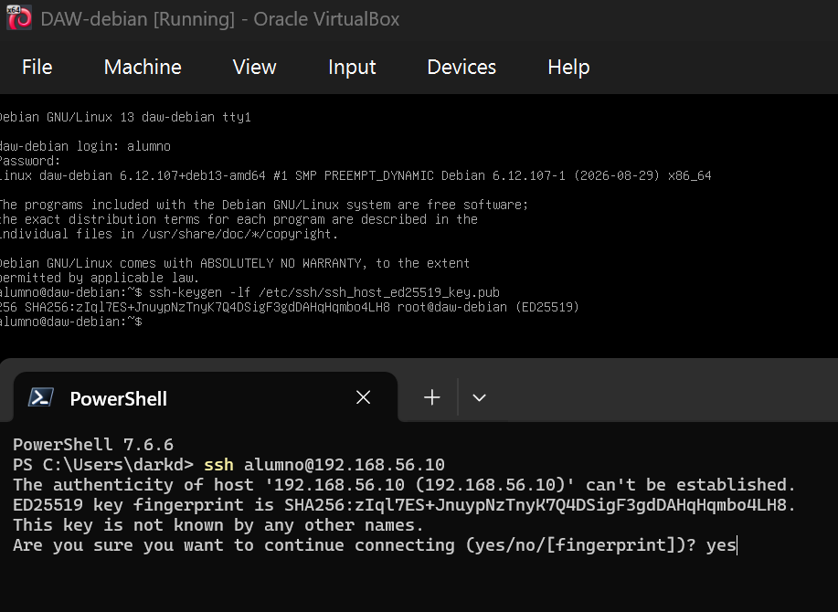
Si coinciden, escribe yes. A partir de entonces la huella queda guardada en tu fichero known_hosts (en Windows, C:\Users\tuusuario\.ssh\known_hosts) y no te lo volverá a preguntar.
Que lo compare SSH por ti
Fíjate en la pregunta: (yes/no/[fingerprint]). En lugar de yes puedes pegar la huella que has obtenido en el servidor (SHA256:…), y SSH la comparará por ti: si no coincide, rechazará la conexión. Es más fiable que comparar a ojo 43 caracteres.
En un servidor real
En un VPS no tienes "ventana" a la que asomarte. El proveedor te muestra la huella en su panel web o en la consola de emergencia, y ahí es donde la compruebas. Casi nadie lo hace, y precisamente por eso este ataque funciona.
WARNING: REMOTE HOST IDENTIFICATION HAS CHANGED!
Si algún día, al conectarte, SSH se niega con este aviso enorme, es que la huella del servidor ya no es la que tenías guardada. Puede ser un ataque, o puede tener una explicación inocente: has reinstalado la máquina, o has importado otra con la misma IP. Solo si sabes el motivo, borra la huella antigua y vuelve a conectarte (y a comprobar la nueva):
También desde Visual Studio Code
Con la extensión Remote - SSH de Microsoft puedes conectarte al servidor desde VS Code (F1 → Remote-SSH: Connect to Host… → usuario@192.168.56.10, plataforma Linux). Tendrás su terminal integrada y podrás editar los ficheros de configuración del servidor con el editor de VS Code. Te resultará muy cómodo en las prácticas siguientes.
A partir de ahora, todos los comandos de la Debian los ejecutas desde esta sesión SSH.
6. Administrar con sudo¶
Con sudo, cualquier comando precedido de esa palabra se ejecuta como root, y todo lo demás se ejecuta con tus permisos normales. Así te proteges de liarla con un comando que no tocaba. A lo largo del módulo harás incontables tareas de administración, y trabajar como root todo el rato es incómodo y peligroso.
Como dejaste vacía la contraseña de root, tu usuario ya tiene permisos. Compruébalo:
En la lista debe aparecer sudo. Valida que funciona:
Si no tienes permisos, responderá:
Y si los tienes, no devolverá nada. Si quieres algo más explícito:
Dar permisos de sudo a otro usuario¶
En un servidor que no has instalado tú, lo normal es tener que dar permisos a un usuario a mano. Practícalo creando un segundo usuario llamado deploy, el típico usuario de despliegue:
Te pedirá una contraseña para deploy (dos veces) y después unos datos opcionales (Full Name, Room Number…): pulsa Enter en todos para dejarlos vacíos y confirma con Y.
Debian ya trae en /etc/sudoers una línea que concede permisos a todo el grupo sudo, así que con añadir el usuario al grupo es suficiente.
Comprueba que funciona cambiando a ese usuario. El prompt pasará a ser deploy@debian-tuapellido, y tanto su como sudo te pedirán la contraseña de deploy:
No pegues de golpe comandos que piden contraseña
Si pegas estas tres líneas a la vez, las que van detrás de su no se ejecutan cuando esperas: pueden tomarse como la contraseña (y falla con su: Authentication failure) o quedarse en espera y ejecutarse más tarde, en otra sesión. Por ejemplo, el exit pegado puede acabar cerrándote la conexión SSH. Cuando un comando pide contraseña, ejecútalo solo y espera a que te la pida.
Los grupos se leen al iniciar sesión
Si añades a un grupo a un usuario que ya tiene una sesión abierta, el cambio no se nota hasta que cierra la sesión y vuelve a entrar.
7. Autenticación con par de claves¶
Ahora haremos lo que se hace en un servidor real: entrar sin contraseña, con un par de claves.
En tu ordenador (no en la máquina virtual), genera el par de claves:
Por qué ed25519 y no RSA
ed25519 es el algoritmo recomendado hoy: claves mucho más cortas, más rápidas y al menos igual de seguras que un RSA de 4096 bits. Verás mucha documentación antigua que usa ssh-keygen -b 4096; funciona, pero ya no es la primera opción.
Si ya tienes una clave, no la sobrescribas
Si en tu ordenador ya existe id_ed25519 (por ejemplo, porque la usas para GitHub), ssh-keygen te preguntará Overwrite (y/n)?. Responde n: si la sobrescribes, perderás el acceso a todo lo que usaba la antigua. No necesitas otra; sáltate la generación y usa la que ya tienes.
Para saber si ya tienes una, en PowerShell: ls $env:USERPROFILE\.ssh
Acepta la ubicación por defecto. Te pedirá una passphrase para proteger la clave privada: dado que queremos agilizar la conexión, déjala vacía pulsando Enter.
Se habrán creado dos archivos en tu carpeta .ssh:
| Archivo | Qué es | ¿Se comparte? |
|---|---|---|
id_ed25519 |
Clave privada | Nunca. No sale de tu equipo |
id_ed25519.pub |
Clave pública | Sí, es la que copiamos al servidor |
Ahora hay que copiar la clave pública al servidor:
Es una conexión SSH normal que, además, copia la clave en el sitio adecuado.
Para evitar problemas de permisos, ejecuta en la Debian:
Los permisos no son opcionales
SSH ignora el fichero authorized_keys si tiene permisos demasiado abiertos, y lo hace en silencio: te seguirá pidiendo la contraseña sin decirte por qué. Es el fallo número uno de esta práctica.
Cierra la sesión y vuelve a conectarte. Debe entrar sin pedirte contraseña. Fíjate en la diferencia: al copiar la clave pide la contraseña por última vez; en la última conexión, ya no:
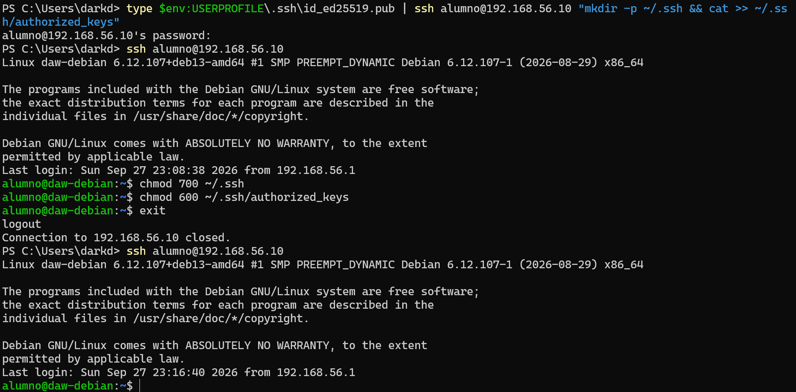
8. Endurecer el servidor SSH¶
Si ya entras con clave, la contraseña sobra: es una puerta abierta que solo sirve para que la intenten forzar. Vamos a cerrarla.
Antes de tocar nada
Comprueba que la conexión con clave funciona. Si desactivas la contraseña sin tener la clave bien puesta, te quedas fuera de tu propio servidor (en la VM podrías entrar por la ventana; en un VPS real, no).
Edita el fichero de configuración del servidor:
Busca estas tres directivas (con Ctrl+F puedes buscar en nano). Por defecto están comentadas con #, lo que significa que se aplica su valor por defecto. Quita el # y déjalas así:
Las líneas activas se ven en blanco y las comentadas en azul:
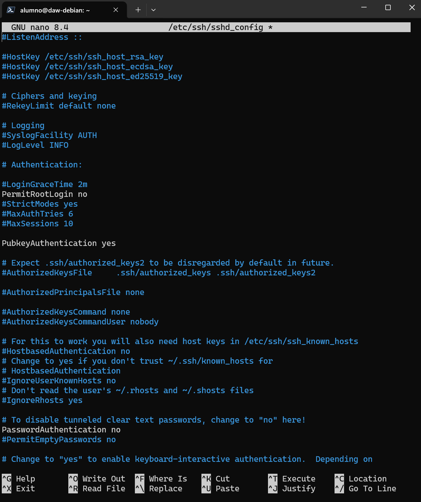
Antes de aplicar nada, comprueba que el fichero no tiene errores. Si hay alguno, el servicio no arrancaría:
Si no devuelve nada, está bien. Aplica los cambios:
Trampa de Debian 13
En Debian 13 el servidor SSH se activa por socket (ssh.socket). Eso significa que el clásico systemctl reload ssh falla con el error fatal: Cannot bind any address y puede tumbarte el servicio.
Usa siempre restart, no reload. Tranquilo: reiniciar el servicio no corta las sesiones SSH que ya estén abiertas.
Comprueba la configuración que el servidor está aplicando de verdad:
Debe mostrar permitrootlogin no, passwordauthentication no y pubkeyauthentication yes. Si alguna no coincide con lo que has escrito, puede que otro fichero de /etc/ssh/sshd_config.d/ la esté sobrescribiendo.
Comprueba desde otra terminal (sin cerrar la que tienes abierta, por si acaso) que sigues entrando con la clave y que, si intentas forzar la contraseña, te rechaza:
Debe responder Permission denied (publickey): el servidor solo acepta claves.
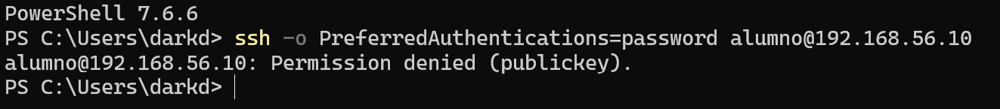
9. Haz una instantánea¶
Apaga la máquina desde tu sesión SSH:
En VirtualBox, selecciona la máquina, abre la pestaña Snapshots, pulsa Take y llama a la instantánea base-limpia:
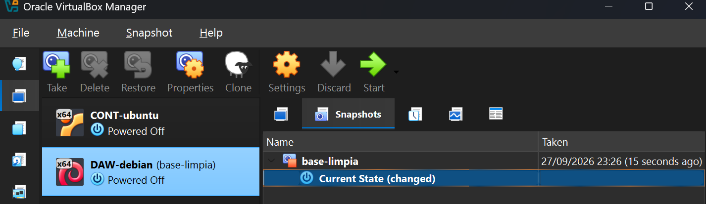
Para volver a ese punto en el futuro: selecciona la instantánea y pulsa Restore.
A lo largo del módulo vas a instalar, configurar y romper muchas cosas. Poder volver a un punto conocido en treinta segundos, en vez de reinstalar Debian entera, te va a salvar más de una tarde.
Cuestiones finales¶
Cuestión 1
Tu máquina tiene dos adaptadores de red: NAT y Host-only. ¿Para qué sirve cada uno? ¿Qué pasaría si solo tuviera el NAT? ¿Y si solo tuviera el Host-only?
Cuestión 2
¿Por qué visudo es preferible a editar /etc/sudoers directamente con nano?
Cuestión 3
Has copiado tu clave pública al servidor. ¿Qué ocurriría si, por error, hubieras copiado la privada? ¿Y qué debes hacer si eso pasa?
Cuestión 4
A enp0s8 le hemos puesto una IP fija en lugar de dejar que la asigne un servidor DHCP. ¿Qué ventajas tiene eso en un servidor? ¿Por qué todos los compañeros podéis usar la misma IP sin que haya conflictos?
Cuestión 5
Explica, con lo visto en la teoría, qué interviene en cada momento cuando te conectas por SSH con un par de claves: Diffie-Hellman, firmas asimétricas o cifrado simétrico.
Entrega¶
El resultado de esta práctica es una máquina virtual, y una máquina no se puede entregar. Lo que entregas son las pruebas de que esa máquina existe y está bien configurada.
La entrega tiene dos partes, y las dos son obligatorias.
Parte 1 — Documento de evidencias (40 %)¶
Un único PDF llamado P1.1-Apellido-Nombre.pdf que contenga, en este orden:
- Portada con tu nombre, el grupo y el hostname de tu máquina.
- Las evidencias de la tabla de abajo.
- Las respuestas a las cinco cuestiones finales, con tus palabras.
Texto, no capturas
La salida de los comandos se entrega copiada como texto, dentro de un bloque o con tipografía de ancho fijo. No valen fotos ni capturas de la terminal.
Solo hay dos excepciones, porque ahí sí hace falta ver la pantalla: la configuración de los adaptadores de red en VirtualBox y la instantánea creada.
Evidencias que debe contener el documento:
| # | Qué hay que demostrar | Comando cuya salida se pega |
|---|---|---|
| 1 | La máquina es tuya y el hostname es el correcto | hostnamectl |
| 2 | Tu usuario y sus grupos | id |
| 3 | El sistema arranca sin entorno gráfico | systemctl status display-manager (debe responder Unit display-manager.service could not be found.: no hay gestor de pantalla) |
| 4 | Las dos interfaces de red tienen IP (enp0s3 por NAT y enp0s8 con 192.168.56.10) |
ip a |
| 5 | El servidor SSH está activo | systemctl status ssh |
| 6 | Tu usuario y el usuario deploy tienen permisos de administración |
sudo id y groups deploy |
| 7 | Entras con par de claves | ssh -v usuario@192.168.56.10 — señala la línea Authenticated using "publickey" |
| 8 | El acceso por contraseña está cerrado | ssh -o PreferredAuthentications=password usuario@192.168.56.10 — debe responder Permission denied (publickey) |
| 9 | Configuración de red de la máquina | Captura de VirtualBox con el Adapter 1 (NAT) y otra con el Adapter 2 (Host-only) |
| 10 | Instantánea creada | Captura de la instantánea base-limpia |
Cada evidencia debe ir acompañada de una frase tuya explicando qué demuestra. Una tanda de comandos pegados sin explicar no puntúa.
Parte 2 — Demostración en clase (60 %)¶
Es una mini entrevista individual. Cuando se te llame, vienes a la mesa del profesor con tu ordenador y la máquina virtual preparada para arrancar. En unos dos minutos:
- Te conectas por SSH desde tu equipo a tu máquina virtual.
- Ejecutas el comando que se te pida en ese momento.
- Explicas en voz alta una de las decisiones que tomaste (por qué dos adaptadores de red, por qué sin escritorio, por qué desactivamos la contraseña…).
Esta parte no se puede preparar de memoria ni copiar: o la máquina funciona, o no funciona.
Cómo se califica
La demostración pesa más que el documento porque es lo que de verdad acredita el resultado de aprendizaje. Una demostración que no funciona no se compensa con un documento impecable: en ese caso la práctica queda pendiente hasta que la máquina funcione, y se vuelve a demostrar.
Criterios de evaluación¶
| Parte | Criterio | Peso |
|---|---|---|
| Documento | Las diez evidencias están completas, en texto y cada una con su frase explicativa | 25 % |
| Documento | Las cinco cuestiones finales están respondidas con corrección y criterio propio | 15 % |
| Demostración | Te conectas por SSH con clave desde tu equipo, y el acceso por contraseña está cerrado | 20 % |
| Demostración | Ejecutas el comando que se te pide y la salida es la esperada | 20 % |
| Demostración | Explicas una de tus decisiones con tus palabras y respondes a las preguntas sobre ella | 20 % |
Si en la demostración aparece una máquina que no es la tuya (el hostname, la huella del servidor o la clave de otra persona), la demostración entera cuenta como no superada.
Antes de entregar, comprueba que…¶
- ☐ El hostname es
debian-tuapellidoy aparece en todas las salidas. - ☐ La máquina arranca sin entorno gráfico y muestra el login en terminal.
- ☐
enp0s8tiene la IP192.168.56.10y responde alpingdesde tu ordenador. - ☐ Tu usuario y el usuario
deployejecutansudocorrectamente. - ☐ Te conectas por SSH sin que te pida contraseña.
- ☐ El acceso por contraseña y el de root están desactivados.
- ☐ Existe la instantánea
base-limpia. - ☐ Las diez evidencias están en el PDF, en texto y comentadas.
- ☐ Las cinco cuestiones están respondidas.
- ☐ El archivo se llama
P1.1-Apellido-Nombre.pdf.